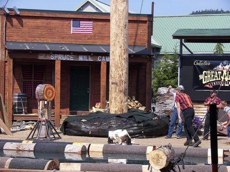

Throw a hatchet so it sticks in a concentric-ring wooden target, scoring by ring.
Heritage note
Part of the living heritage of Canada, United States. It is presented as sport and skill, never as real fighting.
Origins
Usually placed in the era of Modern Heritage (1800 to today), although its exact origins are uncertain, within the cultural world of The Americas: North America.
Sources
Related entries

Tractor pull
United States +1 · Puzzles and mind games
Chinlone
Myanmar · Dexterity and skill games
Pinata swing
Mexico +1 · Dexterity and skill games
Sled dog race
United States +1 · Racing
Ring Tilting
Croatia · Dexterity and skill games
Yukigassen Snow Fort
Japan · Water and winter sports
More from Canada

Barrel racing
United States +1 · Dexterity and skill games
Candlepin bowling
United Kingdom +1 · Dexterity and skill games
Five-Pin Bowling
Canada · Other traditions
Horseshoe pitching
United States +1 · Dexterity and skill games
Ice Canoe Race
Canada · Crafts and making
Maple taffy on snow
Canada · Crafts and making